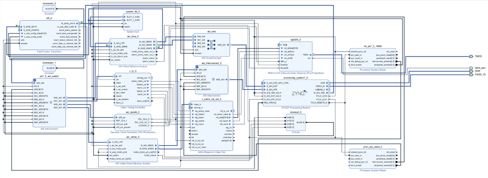
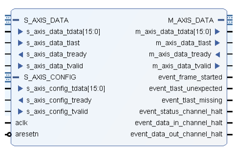
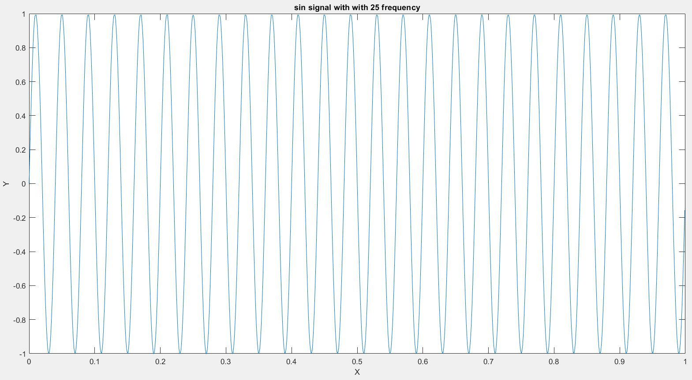
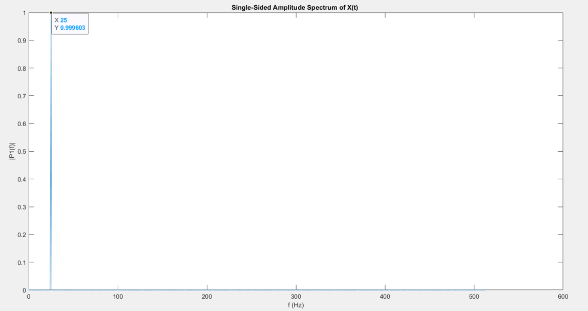
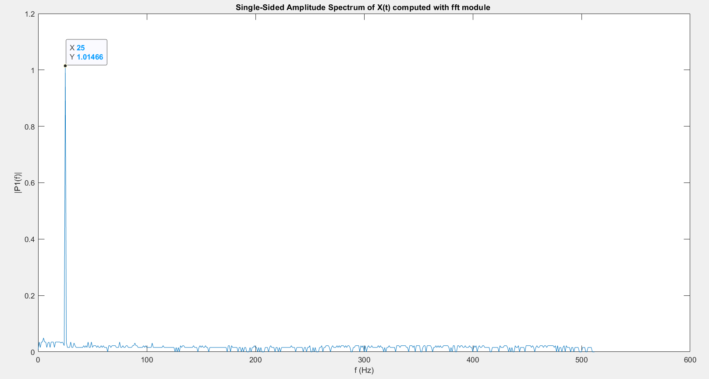

System architecture
The accelerator is only one part of the system.
The ARM Processing System generates the samples and controls the experiment. AXI DMA carries each stream into the Programmable Logic, where a Xilinx FFT core performs the transform. A return DMA path brings the spectrum back to software for plotting, while AXI VDMA feeds the finished frame to the HDMI pipeline.
Core engineering lesson: real-time FPGA performance depends on the complete path—memory, cache management, AXI-Stream handshakes, interrupts, frame buffers, clocks, and display timing—not just the arithmetic block.
ARM / CGenerate 1,024 samples
→AXI DMAMemory map to stream
→FFT in PLFixed-point transform
→AXI DMAStream back to DDR
→VDMA + HDMI1280 × 720 visualization

PS software
Control, transfer, and drawing on the ARM.
The bare-metal C application builds five 1,024-sample waveforms: square, triangle, rising sawtooth, falling sawtooth, and sine. A GPIO interrupt changes the selected waveform. Buffers are 64-byte aligned, cache ranges are flushed before transfer, and DMA completion interrupts coordinate the processing loop.
After receiving the FFT samples, software maps the original signal and spectrum into a canvas, draws both plots, and copies the result into the active video frame buffer.
Programmable logic
A fixed-point AXI-Stream FFT.
The core is configured for one channel, a 1,024-point transform, natural-order output, and 8-bit fixed-point inputs. Each sample occupies a 16-bit word with 8-bit real and imaginary components. Separate AXI-Stream channels carry configuration, input data, and transformed output.
The controller observes TVALID/TREADY handshakes and marks the final sample with TLAST, keeping frame boundaries explicit throughout the streaming path.

Video path
From framebuffer to TMDS
AXI VDMA reads the rendered frame from DDR. The Video Timing Controller and AXI4-Stream-to-Video-Out block produce synchronized pixels; a dynamic clock generator and RGB-to-DVI encoder drive the HDMI output.
Hardware handoff
Bitstream to embedded software
The block design was validated, synthesized into a bitstream, and exported with the hardware definition for the embedded SDK application.
Numerical verification
The correct tone, through the complete fixed-point path.
A MATLAB test generated a 25 Hz sine wave, quantized it to the core's 8-bit format, and supplied 1,024 samples to the Verilog testbench. The FFT output was written back to a file and reconstructed in MATLAB.
25 HzCorrect peak location in both the MATLAB reference and simulated FPGA output.≈1.5%Difference between the reported peak magnitudes: 0.999963 reference vs. 1.01466 from the FFT module.



Phase two
A framed scrambler / descrambler link.
The second phase added a communications layer around the waveform stream. The PS inserts a ten-byte header, initializes a 15-bit scrambler, and scrambles each payload. In PL, a Verilog finite-state machine searches for the header, resets its matching shift register to 0x0401, and marks recovered payload bytes as valid.
01IDLESearch for the first header byte
→02HEADER DETECTMatch the complete ten-byte pattern
→03DESCRAMBLERecover payload and assert valid data
Framing
Protocol, source, destination, message type, length, and checksum fields establish packet boundaries.
RTL verification
A file-driven Verilog testbench streams hexadecimal input and writes only valid recovered bytes.
Signal recovery
MATLAB scripts reconstruct the descrambled waveform for comparison with the original samples.
Engineering outcome
Hardware acceleration as a complete product loop.
This work connects algorithm verification to implementation: MATLAB establishes a numerical reference, RTL and IP simulation validate the streaming transform, embedded software manages the data plane, and the integrated Zynq design turns the result into a live HDMI instrument.
Hardware / software partitioning
Kept experiment control and rendering in the PS while accelerating the structured transform in PL.
Streaming interfaces
Integrated AXI DMA, AXI-Stream framing, interrupts, VDMA, and multiple clock domains.
Cross-domain verification
Compared MATLAB, Verilog simulation, embedded C, and the complete Vivado integration.